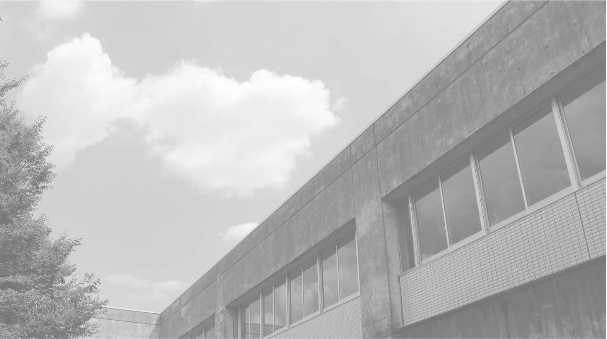
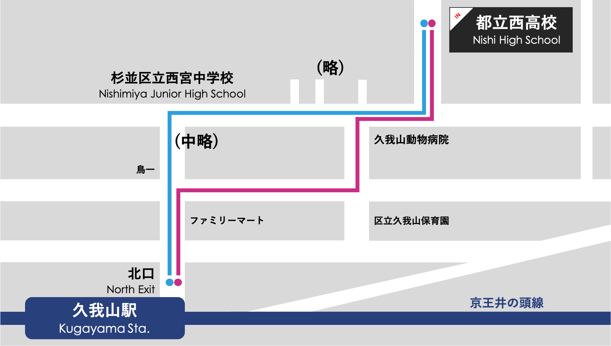

会場案内
お知らせ
アクセス
住所
東京都杉並区宮前4-21-32*本校には駐車場はございません
*公共交通機関をご利用ください
GoogleMapで見る
電車をご利用の方
京王井の頭線 久我山駅 北口より徒歩12分*久我山駅からの簡易経路図を掲載しています
バスをご利用の方
降車停留所：西高校西門前
コミュニティバス すぎ丸 (西荻窪駅〜久我山駅) *愛称「かえで路線」降車停留所：宮前三丁目
関東バス 中36 (中野駅〜吉祥寺駅) *中35系統は五日市街道営業所止まり関東バス 荻60 (荻窪駅〜宮前三丁目)
お問い合わせ
電話
03-3333-7771*お問い合わせは平日8:30-17:00にお願いいたします
FAX
03-3247-1340チケット
事前予約
予約はコチラから